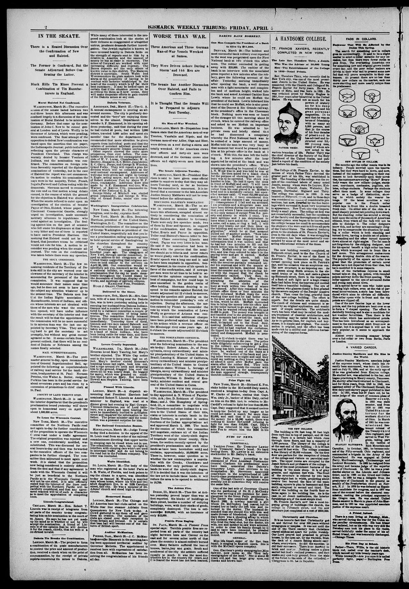

HN-279: Bank robber extorts $21,000 with a pistol and fake explosive
HN-279 · April 4, 1889 · Crime, Law & Justice > Robberies, Burglaries & Theft > Bank robberies

page scanRecorded finding
1889 Denver Moffat bank extortion dispatches differ on precise event day and alleged offender identity.
Discovery narrative
Source: Rensselaer Republican, p. 2, Denver report — original page.
Report: A stranger persuaded First National Bank of Denver president David Moffat to discuss a purported threat to the bank, then drew a pistol and demanded $21,000. He compelled Moffat to sign and cash a check under threat of detonating a bottle presented as nitroglycerine. The robber walked away. The newspaper's update says the bottle was recovered and actually held castor oil.
Assessment: Reported daylight armed extortion and prompt falsification of the claimed explosive, not a verified account of the robber's capture. Follow-up open.
Curated audit flag
Class: Unverified lead (Q)
Recorded difference/concern: 1889 Denver Moffat bank extortion dispatches differ on precise event day and alleged offender identity.
Assessment: Earlier and later A reports; check exact lines before drawing firm conclusion.
Source links: https://tile.loc.gov/storage-services/service/ndnp/ndhi/batch_ndhi_alamo_ver01/data/sn85042588/00212470879/1889040501/0541.pdf https://historicnewspapers.sc.edu/lccn/sn84026853/1889-04-17/ed-1/seq-6/ https://newspaperarchive.com/philadelphia-times-mar-30-1889-p-1/
Original archive images (3)
Authentic images retrieved from Hoosier State Chronicles (Indiana State Library), Library of Congress / Chronicling America and South Carolina Historic Newspapers (University of South Carolina). Article crops are located using the archive's own OCR word coordinates and rendered at native crop resolution; article clips are assembled from the archive's own article-block images; page images marked "archive tiles" are stitched from the archive's own tiled page service at its 256-px tile cap; page images marked "issue PDF" are single pages rasterised from the archive's own issue PDF, with the page chosen by matching the headline against the PDF's text layer; page scans are reduced-size access renditions. No images were generated, mocked, or retouched.

Hoosier State Chronicles (Indiana State Library)
Open full-resolution clip · Archive viewer (full resolution)

Library of Congress / Chronicling America
Open larger view · Archive viewer (full resolution)

South Carolina Historic Newspapers (University of South Carolina)
Open larger view · Archive viewer (full resolution)
Source acquisition
Status: Archive images acquired
Authentic archive-owned image renditions were retrieved for this record and are displayed above. The source-acquisition manifest preserves the original pre-acquisition feasibility assessment.
Original seed
URL (preserved verbatim): https://newspapers.library.in.gov/?a=d&d=RLRP18890404.2.43
Saved research report: Historical_Newspaper_Event_Research_278-302_2026-10-22.md
Evidence note: A newspaper report means a historical publication made a claim; it does not establish that claim as fact. Contemporary reporting is separated from later scholarly context and our own assessment.